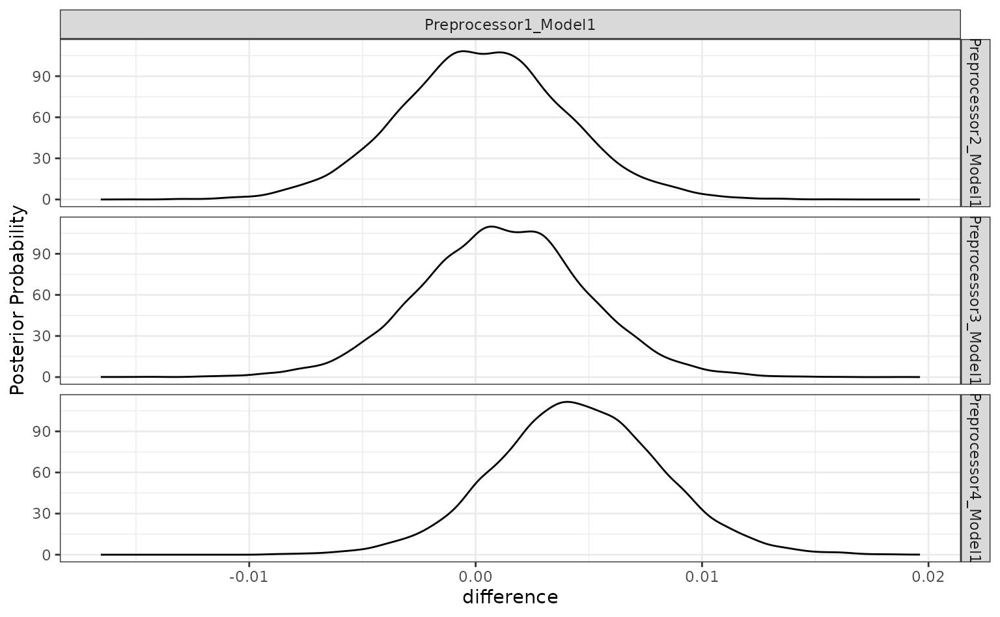

To show how tidyposterior compares models, let’s look at
a small data set. The modeldata package has a data set
called two_class_dat that has 791 data points on to
predictors. The outcome is a two-level factor. There is some linear-ish
separation between the classes but hints that a nonlinear class boundary
might do slightly better.
library(tidymodels)
library(tidyposterior)
data(two_class_dat)
ggplot(two_class_dat, aes(x = A, y = B, col = Class)) +
geom_point(alpha = 0.3, cex = 2) +
coord_fixed()
tidyposterior models performance statistics produced by
models, such as RMSE, accuracy, or the area under the ROC curve. It
relies on resampling to produce replicates of these performance
statistics so that they can be modeled.
We’ll use simple 10-fold cross-validation here. Any other resampling
method from rsample, except a simple validation set, would
also be appropriate.
set.seed(1)
cv_folds <- vfold_cv(two_class_dat)
cv_folds## # 10-fold cross-validation
## # A tibble: 10 × 2
## splits id
## <list> <chr>
## 1 <split [711/80]> Fold01
## 2 <split [712/79]> Fold02
## 3 <split [712/79]> Fold03
## 4 <split [712/79]> Fold04
## 5 <split [712/79]> Fold05
## 6 <split [712/79]> Fold06
## 7 <split [712/79]> Fold07
## 8 <split [712/79]> Fold08
## 9 <split [712/79]> Fold09
## 10 <split [712/79]> Fold10We’ll use a logistic regression model for these data and initially consider two different preprocessing methods that might help the fit. Let’s define a model specification:
logistic_spec <- logistic_reg() %>% set_engine("glm")Comparing modeling/prepreocessing methods
One way to incorporate nonlinearity into the class boundary is to use
a spline basis expansion for the predictors. A recipe step
using step_ns will will encode the predictors in this way.
The degrees of freedom will be hard-coded to produce two additional
feature columns per predictor:
spline_rec <-
recipe(Class ~ ., data = two_class_dat) %>%
step_ns(A, B, deg_free = 3)
spline_wflow <-
workflow() %>%
add_recipe(spline_rec) %>%
add_model(logistic_spec)Binding the model and recipe into a workflow creates a simple
interface when we fit() and predict() the data
(but isn’t required by tidypredict).
An alternate preprocessing method is to normalize the data using a spatial sign transformation. This projects the predictors on to a unit circle and can sometimes mitigate the effect of collinearity or outliers. A recipe is also used. Here is a visual representation of the data after the transformation:
spatial_sign_rec <-
recipe(Class ~ ., data = two_class_dat) %>%
step_normalize(A, B) %>%
step_spatialsign(A, B)
spatial_sign_rec %>%
prep() %>%
bake(new_data = NULL) %>%
ggplot(aes(x = A, y = B, col = Class)) +
geom_point(alpha = 0.3, cex = 2) +
coord_fixed() Another workflow is created for this method:
Another workflow is created for this method:
tidyposterior does not require the user to create their
models using tidymodels packages, caret, or any other
method (although there are advantages to using those tools). In the end
a data frame format with resample identifiers and columns for
performance statistics are needed.
To produce this format with our tidymodels objects, this small convenience function will create a model on the 90% of the data allocated by cross-validation, predict the other 10%, then calculate the area under the ROC curve. If you use tidymodels, there are high-level interfaces (shown below) that don’t require such a function.
compute_roc <- function(split, wflow) {
# Fit the model to 90% of the data
mod <- fit(wflow, data = analysis(split))
# Predict the other 10%
pred <- predict(mod, new_data = assessment(split), type = "prob")
# Compute the area under the ROC curve
pred %>%
bind_cols(assessment(split)) %>%
roc_auc(Class, .pred_Class1) %>%
pull(.estimate)
}For our rsample object cv_folds, let’s
create two columns of ROC statistics using this function in conjunction
with purrr::map and dplyr::mutate:
roc_values <-
cv_folds %>%
mutate(
spatial_sign = map_dbl(splits, compute_roc, spatial_sign_wflow),
splines = map_dbl(splits, compute_roc, spline_wflow)
)
roc_values## # 10-fold cross-validation
## # A tibble: 10 × 4
## splits id spatial_sign splines
## <list> <chr> <dbl> <dbl>
## 1 <split [711/80]> Fold01 0.943 0.946
## 2 <split [712/79]> Fold02 0.861 0.852
## 3 <split [712/79]> Fold03 0.819 0.838
## 4 <split [712/79]> Fold04 0.844 0.873
## 5 <split [712/79]> Fold05 0.865 0.902
## 6 <split [712/79]> Fold06 0.868 0.909
## 7 <split [712/79]> Fold07 0.952 0.934
## 8 <split [712/79]> Fold08 0.904 0.920
## 9 <split [712/79]> Fold09 0.765 0.811
## 10 <split [712/79]> Fold10 0.851 0.889
# Overall ROC statistics per workflow:
summarize(
roc_values,
splines = mean(splines),
spatial_sign = mean(spatial_sign)
)## # A tibble: 1 × 2
## splines spatial_sign
## <dbl> <dbl>
## 1 0.887 0.867There is the suggestion that using splines is better than the spatial sign. It would be nice to have some inferential analysis that could tell us if the size of this difference is create than the experimental noise in the data.
tidyposterior uses a Bayesian ANOVA model to compute
posterior distributions for the performance statistic of each modeling
method. This tells use the probabilistic distribution of the model
performance metrics and allows us to make more formal statements about
the superiority (or equivalence) of different models. Tidy Models
with R has a good explanation of how the Bayesian ANOVA model
works.
The main function to conduct the analysis is perf_mod().
The main argument is for the object containing the resampling
information and at least two numeric columns of performance statistics
(measuring the same metric). As described in ?perf_mod,
there are a variety of other object types that can be used for this
argument.
There are also options for statistical parameters of the analysis, such as any transformation of the output statistics that should be used and so on.
The main options in our analysis are passed through to the
rstanarm function stan_glmer(). These
include:
seed: An integer that controls the random numbers used in the Bayesian model.iter: The total number of Montre Carlo iterations used (including the burn-in samples).chains: The number of independent Markov Chain Monte Carlo analyses to compute.refresh: How often to update the log (a value of zero means no output).
Other options that can be helpful (but we’ll use their defaults):
prior_intercept: The main argument in this analysis for specifying the prior distribution of the parameters.family: The exponential family distribution for the performance statistics.cores: The number of parallel workers to use to speed-up computations.
Our call to this function is:
rset_mod <- perf_mod(roc_values, seed = 2, iter = 5000, chains = 5, refresh = 0)The summary() function for this type of object shows the
output from stan_glmer(). It’s long, so we show some of the
initial output:
##
## Model Info:
## function: stan_glmer
## family: gaussian [identity]
## formula: statistic ~ model + (1 | id)
## algorithm: sampling
## sample: 12500 (posterior sample size)
## priors: see help('prior_summary')
## observations: 20
## groups: id (10)
##
## Estimates:
## mean sd 10% 50% 90%
## (Intercept) 0.867 0.016 0.847 0.867 0.887
## modelsplines 0.020 0.010 0.008 0.020 0.031
## b[(Intercept) id:Fold01] 0.060 0.021 0.034 0.060 0.086
##
## <snip>Assuming that our assumptions are appropriate, one of the main things
that we’d like to get out of the object are samples of the posterior
distributions for the performance metrics (per modeling method). The
tidy() method will produce a data frame with such
samples:
tidy(rset_mod, seed = 3)## # Posterior samples of performance
## # A tibble: 25,000 × 2
## model posterior
## <chr> <dbl>
## 1 spatial_sign 0.871
## 2 splines 0.883
## 3 spatial_sign 0.889
## 4 splines 0.914
## 5 spatial_sign 0.869
## 6 splines 0.884
## 7 spatial_sign 0.862
## 8 splines 0.899
## 9 spatial_sign 0.871
## 10 splines 0.894
## # … with 24,990 more rowsWe require a seed value since it is a sample.
There is a simple plotting method for the object too:
autoplot(rset_mod)
There is some overlap but, again, it would be better if we could quantify this.
To compare models, the contrast_models() function
computes the posterior distributions of differences in performance
statistics between models. For example, what does the posterior look
like for the difference in performance for these two preprocessing
methods? By default, the function computes all possible differences (a
single contrast for this example). There are also summary()
and plot methods:
preproc_diff <- contrast_models(rset_mod, seed = 4)
summary(preproc_diff, seed = 5)## # A tibble: 1 × 9
## contrast proba…¹ mean lower upper size pract…² pract…³ pract…⁴
## <chr> <dbl> <dbl> <dbl> <dbl> <dbl> <dbl> <dbl> <dbl>
## 1 spatial_… 0.0216 -0.0199 -0.0349 -0.00429 0 NA NA NA
## # … with abbreviated variable names ¹probability, ²pract_neg,
## # ³pract_equiv, ⁴pract_posSince the difference is negative, the spline model appears better than the spatial sign method. The summary output quantifies this by producing a simple credible interval for the difference. The probability column also reflects this since it is the probability that the spline ROC scores are greater than the analogous statistics from the spatial sign model. A value of 0.5 would indicate no difference.
There is an additional analysis that can be used. The ROPE method, short for Region of Practical Equivalence, is a method for understanding the differences in models in less subjective way. For this analysis, we would specify a practical effect size (usually before the analysis). This quantity reflects what difference in the metric is considered practically meaning full in the context of our problem. In our example, if we saw two models with a difference in their ROC statistics of 0.02, we might consider them effectually different (your beliefs may differ).
Once we have settled on a value of this effect size (in the units of
the statistic), we can compute how much of the difference is within this
region of practical equivalence (in our example, this is
[-0.02, 0.02]). If the difference is mostly within these
bounds, the models might be significantly different but not practically
different. Alternatively, if the differences are beyond this, they would
be different in both senses.
The summary and plot methods have optional arguments called
size. The summary() function computes the
probability of the posterior differences that fall inside and outside of
this region. The plot method shows it visually:
summary(preproc_diff, size = 0.02) %>%
select(contrast, starts_with("pract"))## # A tibble: 1 × 4
## contrast pract_neg pract_equiv pract_pos
## <chr> <dbl> <dbl> <dbl>
## 1 spatial_sign vs splines 0.501 0.499 0.0004
autoplot(preproc_diff, size = 0.02)For this analysis, there are about even odds that the difference
between these models is not practically important (since the
pract_equiv is near 0.5).
About our assumptions
Previously, the expression “assuming that our assumptions are appropriate” was used. This is an inferential analysis and the validity of our assumptions matter a great deal. There are a few assumptions for this analysis. The main one is that we’ve specified the outcome distribution well. We’ve models the area under the ROC curve. This is a statistic bounded (effectively) between 0.5 and 1.0. The variance of the statistic is probably related to the mean; there is likely less variation in scores near 1.0 than those near 0.5.
The default family for stan_glmer() is Gaussian. Given
the characteristics of this metric, that assumption might seem
problematic.
However, Gaussian seems like a good first approach for this assumption. The rationale is based on the Central Limit Theorem. As the sample size increases, the sample mean statistic converges to normality despite the distribution of the individual data points. Our performance estimates are summary statistics and, if the training set size is “large enough”, they will exhibit behavior consistent with normality.
As a simple (and approximate) example/diagnostics, suppose we used a
simple ANOVA for the ROC statistics using lm(). This is not
the same analysis as the one used by tidyposterior, but the
regression parameter estimates should be fairly similar. For that
analysis, we can assess the normality of the residuals and see that they
are pretty consistent with the normality assumption:
roc_longer <-
roc_values %>%
select(-splits) %>%
pivot_longer(cols = c(-id), names_to = "preprocessor", values_to = "roc")
roc_fit <- lm(roc ~ preprocessor, roc_longer)
roc_fit %>%
augment() %>%
ggplot(aes(sample = .resid)) +
geom_qq() +
geom_qq_line(lty = 2) +
coord_fixed(ratio = 20)
If this were not the case there are a few things that we can do.
The easiest approach would be to use a variance stabilizing
transformation of the metrics and keep the Gaussian assumption.
perf_mod() has a transform argument that will
transform the outcome but still produce the posterior distributions in
the original units. This will help if the variation within each model
significantly changes over the range of the values. When transformed
back to the original units, the posteriors will have different
variances.
Another option that can help with heterogeneous variances is
hetero_var. This fits a difference variance for each
modeling method. However, this may make convergence of the model more
difficult.
Finally, a different distribution can be assumed using the family
argument to stan_glmer(). Since our metrics are numeric,
there are not many families to choose from.
Evaluating sub-models
The previous example was a between-model comparison (where “model” really means statistical model plus preprocessing method). If the model must be tuned, there is also the issue of within-model comparisons.
For our spline analysis, we assumed that three degrees of freedom were appropriate. However, we might tune the model over that parameter to see what the best degrees of freedom should be.
The previous spline recipe is altered so that the degrees of freedom
parameter doesn’t have an actual value. Instead, using a value of
tune() will mark this parameter for optimization. There are
a few different approaches for tuning this parameter; we’ll use simpe
grid search.
spline_rec <-
recipe(Class ~ ., data = two_class_dat) %>%
step_ns(A, B, deg_free = tune())The tune package function tune_grid() is
used to evaluate several values of the parameter. For each value, the
resampled area under the ROC curve is computed.
spline_tune <-
logistic_spec %>%
tune_grid(
spline_rec,
resamples = cv_folds,
grid = tibble(deg_free = c(1, 3, 5, 10)),
metrics = metric_set(roc_auc),
control = control_grid(save_workflow = TRUE)
)
collect_metrics(spline_tune) %>%
arrange(desc(mean))## # A tibble: 4 × 7
## deg_free .metric .estimator mean n std_err .config
## <dbl> <chr> <chr> <dbl> <int> <dbl> <chr>
## 1 1 roc_auc binary 0.888 10 0.0141 Preprocessor1_Model1
## 2 3 roc_auc binary 0.887 10 0.0137 Preprocessor2_Model1
## 3 5 roc_auc binary 0.886 10 0.0133 Preprocessor3_Model1
## 4 10 roc_auc binary 0.883 10 0.0128 Preprocessor4_Model1There is a perf_mod() method for this type of object.
The computations are conducted in the same manner but, in this instance,
four sub-models are compared.
grid_mod <- perf_mod(spline_tune, seed = 6, iter = 5000, chains = 5, refresh = 0)
autoplot(grid_mod)When the object given to perf_mod is from a model tuning function,
the model column corresponds to the .config
column in the results.
There is a lot of overlap. The results do call into question the overall utility of using splines. A single degree of freedom model corresponds to a linear effect. Let’s compare the linear class boundaries to the other sub-models to see if splines are even improving the model.
The contrast_model function can take two lists of model identifiers
and compute their differences. Again, for tuning objects, this should
include values of .config. This specification compute the
difference {1 df - X df} so positive differences indicate
that the linear model is better.
grid_diff <-
contrast_models(
grid_mod,
list_1 = rep("Preprocessor1_Model1", 3),
list_2 = c(
"Preprocessor2_Model1", # <- 3 df spline
"Preprocessor3_Model1", # <- 5 df spline
"Preprocessor4_Model1" # <- 10 df spline
),
seed = 7
)
summary(grid_diff)## # A tibble: 3 × 9
## contrast proba…¹ mean lower upper size pract…² pract…³ pract…⁴
## <chr> <dbl> <dbl> <dbl> <dbl> <dbl> <dbl> <dbl> <dbl>
## 1 Preproce… 0.529 2.44e-4 -0.00584 0.00624 0 NA NA NA
## 2 Preproce… 0.623 1.11e-3 -0.00492 0.00708 0 NA NA NA
## 3 Preproce… 0.891 4.44e-3 -0.00148 0.0104 0 NA NA NA
## # … with abbreviated variable names ¹probability, ²pract_neg,
## # ³pract_equiv, ⁴pract_pos
autoplot(grid_diff)
The results indicate that a lot of degrees of freedom might make the model worse. At best, there is a limited difference in performance when more than one spline term is used.
The ROPE analysis is more definitive; there is no sense of practical differences within the previously used effect size:
autoplot(grid_diff, size = 0.02)Workflow sets
Workflow sets are collections of workflows and their results. These
can be made after existing workflows have been evaluated or by using
workflow_set() to create an evaluate the models.
Let’s create an initial set that has difference combinations of the two predictors for this data set.
library(workflowsets)
logistic_set <-
workflow_set(
list(A = Class ~ A, B = Class ~ B, ratio = Class ~ I(log(A/B)),
spatial_sign = spatial_sign_rec),
list(logistic = logistic_spec)
)
logistic_set## # A workflow set/tibble: 4 × 4
## wflow_id info option result
## <chr> <list> <list> <list>
## 1 A_logistic <tibble [1 × 4]> <opts[0]> <list [0]>
## 2 B_logistic <tibble [1 × 4]> <opts[0]> <list [0]>
## 3 ratio_logistic <tibble [1 × 4]> <opts[0]> <list [0]>
## 4 spatial_sign_logistic <tibble [1 × 4]> <opts[0]> <list [0]>The object volumn contains the workflows that are
created by the combinations of preprocessors and the model (multiple
models could have been used). Rather than calling the same functions
from the tune package repeatedly, we can evaluate these
with a single function call. Notice that none of these workflows require
tuning so tune::fit_resamples() can be used:
logistic_res <-
logistic_set %>%
workflow_map("fit_resamples", seed = 3, resamples = cv_folds,
metrics = metric_set(roc_auc))
logistic_res## # A workflow set/tibble: 4 × 4
## wflow_id info option result
## <chr> <list> <list> <list>
## 1 A_logistic <tibble [1 × 4]> <opts[2]> <rsmp[+]>
## 2 B_logistic <tibble [1 × 4]> <opts[2]> <rsmp[+]>
## 3 ratio_logistic <tibble [1 × 4]> <opts[2]> <rsmp[+]>
## 4 spatial_sign_logistic <tibble [1 × 4]> <opts[2]> <rsmp[+]>
collect_metrics(logistic_res) %>%
filter(.metric == "roc_auc")## # A tibble: 4 × 9
## wflow_id .config preproc model .metric .esti…¹ mean n std_err
## <chr> <chr> <chr> <chr> <chr> <chr> <dbl> <int> <dbl>
## 1 A_logistic Prepro… formula logi… roc_auc binary 0.702 10 0.0210
## 2 B_logistic Prepro… formula logi… roc_auc binary 0.866 10 0.0151
## 3 ratio_logistic Prepro… formula logi… roc_auc binary 0.749 10 0.0164
## 4 spatial_sign_… Prepro… recipe logi… roc_auc binary 0.867 10 0.0176
## # … with abbreviated variable name ¹.estimatorWe can also add the previously tuned spline results by first converting them to a workflow set then appending their rows to the results:
logistic_res <-
logistic_res %>%
bind_rows(
as_workflow_set(splines = spline_tune)
)
logistic_res## # A workflow set/tibble: 5 × 4
## wflow_id info option result
## <chr> <list> <list> <list>
## 1 A_logistic <tibble [1 × 4]> <opts[2]> <rsmp[+]>
## 2 B_logistic <tibble [1 × 4]> <opts[2]> <rsmp[+]>
## 3 ratio_logistic <tibble [1 × 4]> <opts[2]> <rsmp[+]>
## 4 spatial_sign_logistic <tibble [1 × 4]> <opts[2]> <rsmp[+]>
## 5 splines <tibble [1 × 4]> <opts[0]> <tune[+]>There are some convenience functions to take an initial look at the results:
rank_results(logistic_res, rank_metric = "roc_auc") %>%
filter(.metric == "roc_auc")## # A tibble: 8 × 9
## wflow_id .config .metric mean std_err n prepr…¹ model rank
## <chr> <chr> <chr> <dbl> <dbl> <int> <chr> <chr> <int>
## 1 splines Prepro… roc_auc 0.888 0.0141 10 recipe logi… 1
## 2 splines Prepro… roc_auc 0.887 0.0137 10 recipe logi… 2
## 3 splines Prepro… roc_auc 0.886 0.0133 10 recipe logi… 3
## 4 splines Prepro… roc_auc 0.883 0.0128 10 recipe logi… 4
## 5 spatial_sign_lo… Prepro… roc_auc 0.867 0.0176 10 recipe logi… 5
## 6 B_logistic Prepro… roc_auc 0.866 0.0151 10 formula logi… 6
## 7 ratio_logistic Prepro… roc_auc 0.749 0.0164 10 formula logi… 7
## 8 A_logistic Prepro… roc_auc 0.702 0.0210 10 formula logi… 8
## # … with abbreviated variable name ¹preprocessor
autoplot(logistic_res, metric = "roc_auc")The perf_mod() method for workflow sets takes the best
submodel from each workflow and then uses the standard
tidyposterior analysis:
roc_mod <- perf_mod(logistic_res, metric = "roc_auc", seed = 1, refresh = 0)The results of this call produces an object with an additional class
to enable some autoplot() methods specific to workflow
sets. For example, the default plot shows 90% credible intervals for the
best results in each workflow:
autoplot(roc_mod)Alternatively, the ROPE estimates for a given since can be computed to compare the numerically best workflow to the others. The probability of practical equivalence is shown for all results:
autoplot(roc_mod, type = "ROPE", size = 0.025)